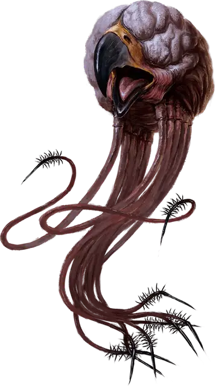

Грелл
Grell
Средняя Аберрация, нейтрально-злая

Класс Доспеха 12
Хиты 55 (10к8 + 10)
Скорость 10 футов, летая 30 футов (парит)
| мод | спас | ||
|---|---|---|---|
| СИЛ | 15 | +2 | +2 |
| ЛОВ | 14 | +2 | +2 |
| ТЕЛ | 13 | +1 | +1 |
| мод | спас | ||
|---|---|---|---|
| ИНТ | 12 | +1 | +1 |
| МДР | 11 | +0 | +0 |
| ХАР | 9 | −1 | −1 |
Навыки Восприятие +4, Скрытность +6
Иммунитет к урону электричество
Иммунитет к состояниям сбивание с ног, ослепление
Чувства слепое зрение 60 футов (слеп за пределами этого радиуса), пассивное Восприятие 14
Языки Язык Греллов
Опасность 3 (700 опыта)
Бонус мастерства +2
Среда обитания Подземье
Действия
Мультиатака. Грелл совершает две атаки: одну щупальцами, и одну клювом.
Щупальца. Рукопашная атака оружием: +4 к попаданию, досягаемость 10 футов, одно существо. Попадание: Колющий урон 7 (1к10 + 2), и цель должна преуспеть в спасброске Телосложения Сл 11, иначе станет отравленной на 1 минуту. Отравленная цель парализована, и может повторять этот спасбросок в конце каждого своего хода, оканчивая эффект при успехе.
Цель также становится схваченной (Сл высвобождения равна 15). Если размер цели не больше Среднего, она также становится опутанной, пока не перестанет быть схваченной. Держа цель в захвате, грелл совершает с преимуществом броски атаки по ней, и не может использовать эту атаку против других целей. Когда грелл перемещается, все существа с размером не больше Среднего, схваченные им, перемещаются вместе с ним.
Клюв. Рукопашная атака оружием: +4 к попаданию, досягаемость 5 футов, одна цель. Попадание: Колющий урон 7 (2к4 + 2).
Описание
«НАША БЕССТРАШНАЯ ПЛУТОВКА ВЗОБРАЛАСЬ НАВЕРХ ПО ШАХТЕ, ЧТОБЫ ЗАКРЕПИТЬ ВЕРЕВКУ. РАЗДАЛСЯ СУДОРОЖНЫЙ ВДОХ, А ЗАТЕМ ВЕРЕВКА УПАЛА. БОЛЬШЕ ПЛУТОВКУ МЫ НЕ ВИДЕЛИ».
— ИСКАТЕЛЬ ПРИКЛЮЧЕНИЙ, СВИДЕТЕЛЬСТВУЮЩИЙ О НАПАДЕНИИ ГРЕЛЛА В ХАЙБЕРЕ, ПУБЛИКАЦИЯ В ХРОНИКАХ КОРРАНБЕРГА
Грелл походит на летающий мозг с узким острым клювом. Под толстой волокнистой шкурой его трехметровых щупалец скрываются сотни кольцевых мышц. Острые шипы на концах щупальцев впрыскивают парализующий яд. Грелл может частично скрывать эти шипы в щупальцах, чтобы взаимодействовать с объектами, которые не хочет проткнуть или разорвать.
У греллов нет глаз, а летают они с помощью своего рода левитации. У них острый слух, а кожа чувствительна к колебаниям воздуха и электрическим полям, благодаря чему они легко обнаруживают существ в непосредственной близости. Это существо чувствует и двигается благодаря своей способности к управлению электричеством, так что и молнию оно может поглотить без вреда.
Бывает, что греллы, одиночки по своей природе, собираются в маленькие группы, называемые шабашами.
Парящие налетчики. Греллы предпочитают нападать либо на одиночек, либо на отстающих, зависая под потолком коридоров или пещер, пока удобная жертва не пройдет снизу, где тут же будет опутана щупальцами. Парализованное существо грелл относит в свое логово.
Инородные пожиратели. Греллы — иноземные хищники, делящие всех других существ на три категории: съедобное, несъедобное и Великие Едоки (те немногие существа, что могут охотиться на греллов). Их не мучает совесть от нападений на съедобных существ, в том числе и гуманоидов. Однако больших существ, которых тяжело нести, они избегают.
Иногда грелл может позволить искателям приключений сражаться с другими угрозами в подземелье, которое он зовет домом. Держась в стороне, пока герои разбираются с большей угрозой, он ждет, когда сможет нанести удар.